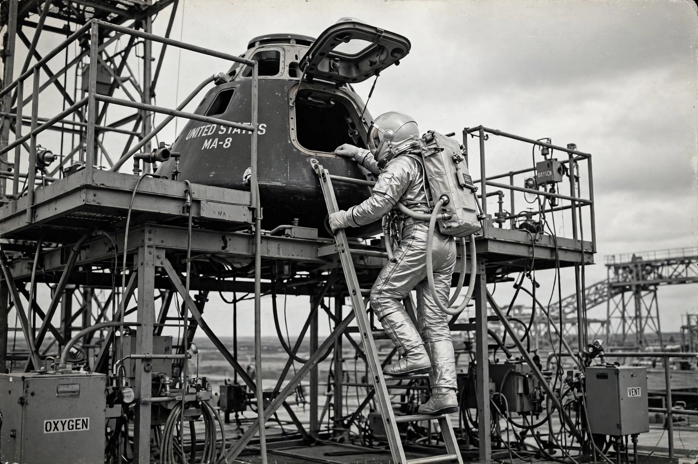

Mercury-Atlas 6
From Wikipedia, the free encyclopedia
| Mercury-Atlas 6 | |
|---|---|
| Astronaut | John Glenn |
| Launch | 20 February 1962 |
| Duration | 4 hours 56 minutes, 3 orbits |
| Spacecraft | Friendship 7 |

Glenn boards Friendship 7.Mercury-Atlas 6 was the first American orbital spaceflight, flown by John Glenn in the capsule Friendship 7 on 20 February 1962 — ten months after Yuri Gagarin, restoring American standing in the space race at a moment of acute Cold War anxiety. Glenn circled Earth three times, reporting 'fireflies' of glowing particles outside his window, and manually flew much of the flight after an autopilot fault.
The mission's crisis came from a faulty switch: telemetry suggested the landing bag had deployed, implying the heat shield might be loose. Mission Control — Kraft directing — ordered Glenn to keep the retropack strapped on through reentry to hold the shield in place, a decision made without telling Glenn the full reason. He rode a plasma sheath studded with burning debris ('a real fireball') and splashed down safely; the shield proved sound, the switch faulty.
Aftermath
Glenn became instantly the most beloved figure of the American programme — ticker-tape parades, a congressional address — and, controversially, was kept from further flights as too valuable to risk, leaving NASA for politics. He returned to orbit 36 years later aboard STS-95 at 77, closing the longest loop in spaceflight biography.
See also
John Glenn · Christopher C. Kraft Jr. · STS-95 · Project Mercury